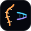
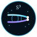

ARCSLAB × SSSLABInteractive Research ShowcaseDepartment of Mechanical Engineering · University of Torbat Heydarieh

S³ · Smart Small Systems Laboratory SSSLAB From non-classical mechanics to smart micro/nano systems Explore SSSLAB models →Digital twins, live solvers and interactive simulators built by our students. Every model runs in your browser, and many come with a short research podcast.
Enter the showcase↓01 — Gallery
Choose a model to read about it and hear its podcast, or launch it straight away. Each one opens full-screen with the podcast in the top bar.
No models match your search.
02 — Laboratories
Sister laboratories in the Department of Mechanical Engineering: one bends robots, the other shrinks machines to the micro and nano scale.
03 — How it works
Filter by laboratory or search by topic, author or method. Open a card to read the abstract and the list of features.
The simulator runs in your browser: drag to rotate, use the sliders, and try webcam gesture control where it is offered.
When a model has a research podcast, play it from the card, the details panel or the top bar while you explore.
# Each model lives in its own folder. Drop a podcast file next to it and it plays automatically. models/ ├── registry.js ← list of models (title, lab, authors, abstract…) ├── s3-cnw-nanotweezer-twin/ │ ├── index.html ← the simulation │ ├── cover.svg ← card image │ └── podcast.mp3 ← optional · also .m4a .ogg .wav … ├── s3-fgm-tapered-nanotweezer/ ├── arcs-continuum-arm-demo/ └── _template/ ← copy this to start a new model